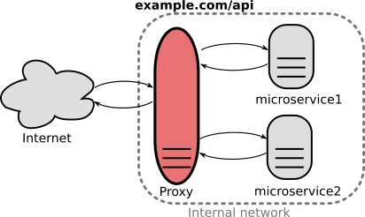

Ferramentas feitas sob medida
A Metodologia QueriDO depende de algumas ferramentas de software. Pensando no passo-a-passo metodológico são ferramentas para o cumprimento das seguintes funcionalidades:
-
Buscas por documentos e referencial de diários oficiais: por sua conta. Google, pesquisa do site do diário... Eventualmente, como no caso de São Paulo, tem Diário Livre.
-
Trazendo os fascículos e/ou coletando matérias específicas para o repositório do QueriDO. O software responsável por trazer diários, é o TrazDia. Ele já traz o conteúdo perfeito (HTML limpo), fazendo uma cópia do conteúdo original (sujo) no repositório git, e a cópia do limpo e demais variantes na base de dados do QueriDO.
-
Marcando cada uma das matérias, ou seja, transformando o conteúdo "limpo" em conteúdo estruturado e semanticamente marcado. As marcações são o recurso computacional que garante que o significado de cada trecho de texto possa ser compreendido pelos softwares de análise de conteúdo. Por exemplo trechos indicando datas de eventos, valores de contratos, nomes de pessoas, endereços de ruas, códigos de CNPJ, CPF, RG, etc. Já a estrutura, garante o reconhecimento de partes tais como "frente", "corpo", "seção", "subseção", "tabela" e "final" do texto, que dão o contexto de cada marcação.
-
Recuperando trechos desejados e fazendo análise estatística (agregadores SQL) e semnântica (SparQL). Novamente a base de dados (estomos usando PostgreSQL 9.6+ para sua gestão) é o software que faz isso. Os experts da equipe ajudam a gerar relatórios pertinentes.
Como usar
Arquitetura
A arquitetura de um sistema de software é forma como os blocos básicos e subsistemas foram organizados. No QueriDO foi adotada uma arquitetura baseada em serviços (SOA), de backend e frontend. Cada módulo é independnete e auto-contido, e consiste de um conjunto coeso de serviços.
Front-end
.. Diário Livre ... interface de testes ... Relatórios aqui na documentação...
... Interfaces de texto para uso em terminal, pelos experts...
Back-end
Todo módulo de back-end precisa ser descrito por uma especificação OpenAPI, e então "plugada" via API gateway.

...